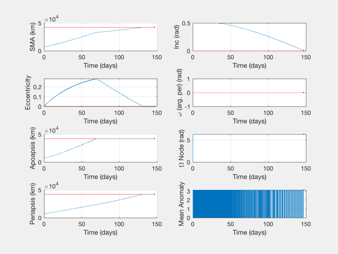
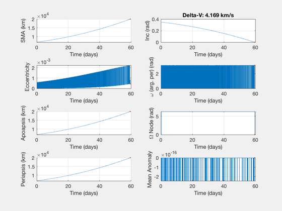
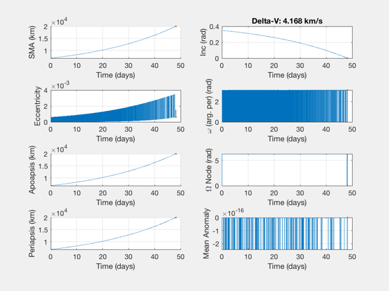
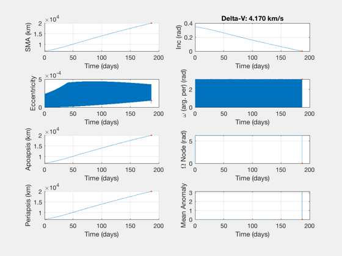
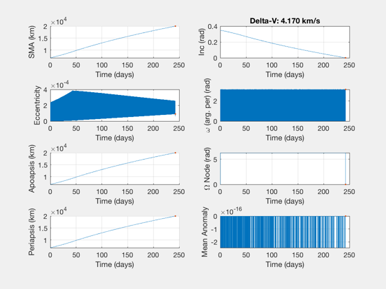
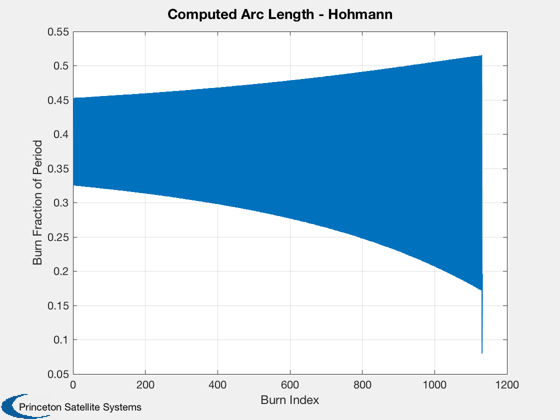
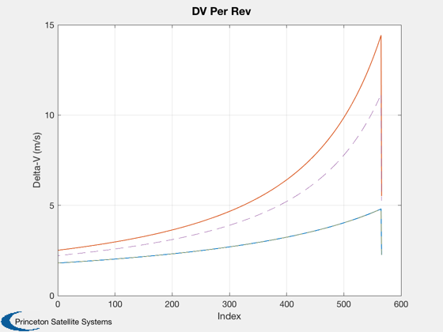
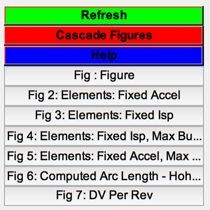

Contents
- Demo of iterative Hohmann maneuvers with an acceleration limit
- Acceleration limited, using default orbit fraction of 0.5
- Add a value of specific impulse, acceleration will increase over time
- Limit burns to a smaller fraction of the orbit, and specify a maximum burn time
- Acceleration and tMax, but no Isp.
- Compute arc loss for the burns
- Figure legend
Demo of iterative Hohmann maneuvers with an acceleration limit
The allowable delta-V at each revolution is computed from an acceleration, using an allowable orbit fraction and, optionally, a time limit. If a specific impulse is entered the acceleration increases over time as fuel is consumed.
The demo demonstrates the different inputs available to the function; in all of the cases, the delta-V is the same, but the transfer time changes.
See also: IterativeHohmannAccel, IterativeHohmannInc
%-------------------------------------------------------------------------- % Copyright (c) 2019 Princeton Satellite Systems, Inc. % All rights reserved. %-------------------------------------------------------------------------- % Initial acceleration for all cases accel = 1e-6; % Orbit parameters, LEO to MEO with 20 degree plane change r0 = 6778; r1 = 20000; dI = -20*pi/180;
Acceleration limited, using default orbit fraction of 0.5
Similar to the low-thrust spiral, a few days longer and a little less DV.
IterativeHohmannAccel( r0, r1, dI, accel ); h1 = findobj('name','Elements'); set(h1,'name','Elements: Fixed Accel')
Initial; Target; Achieved
Columns 1 through 3
6778 0.349065850398866 0
20000 0 0
20010.2132131131 0.000162422199219362 0
Columns 4 through 6
0 0 0
0 0 0
3.14159265358979 0.000443226708223339 0
Iterative: 4.169 km/s, 59.6 days, 453 revs
accel: 1e-06 km/s2
Hohmann: 3.462 km/s (#1 1.77683, #2 1.7)
Low thrust: 4.506 km/s, 52.1541 days
  Add a value of specific impulse, acceleration will increase over time
This results in a slightly faster transfer, less than 50 days.
Isp = 1000; IterativeHohmannAccel( r0, r1, dI, accel, Isp ) h1 = findobj('name','Elements'); set(h1,'name','Elements: Fixed Isp')
Initial; Target; Achieved
Columns 1 through 3
6778 0.349065850398866 0
20000 0 0
20013.9324623114 0.000219050517501141 0
Columns 4 through 6
0 0 0
0 0 0
3.14159265358979 0.000611170927580759 0
Iterative: 4.168 km/s, 48.2 days, 387 revs
Isp: 1000 s, accel0: 1e-06 km/s2, accelF: 1.52714e-06 km/s2
Hohmann: 3.462 km/s (#1 1.77683, #2 1.7)
Low thrust: 4.506 km/s, 52.1541 days
 Limit burns to a smaller fraction of the orbit, and specify a maximum burn time
The increases the transfer time by almost a factor of 4.
frac = 0.2; tMax = 1800; IterativeHohmannAccel( r0, r1, dI, accel, Isp, frac, tMax ) h1 = findobj('name','Elements'); set(h1,'name','Elements: Fixed Isp, Max Burn Duration')
Initial; Target; Achieved
Columns 1 through 3
6778 0.349065850398866 0
20000 0 0
20002.8635388544 4.13566179226132e-05 0
Columns 4 through 6
0 0 0
0 0 0
3.14159265358979 0.000120414547532194 -2.4487037904005e-16
Iterative: 4.170 km/s, 187.1 days, 1267 revs
Isp: 1000 s, accel0: 1e-06 km/s2, accelF: 1.52981e-06 km/s2
frac: 0.2 orbits
Max: 1800 s
Hohmann: 3.462 km/s (#1 1.77683, #2 1.7)
Low thrust: 4.506 km/s, 52.1541 days
 Acceleration and tMax, but no Isp.
This takes even longer than the previous case.
IterativeHohmannAccel( r0, r1, dI, accel, [], frac, tMax ) h1 = findobj('name','Elements'); set(h1,'name','Elements: Fixed Accel, Max Burn Duration')
Initial; Target; Achieved
Columns 1 through 3
6778 0.349065850398866 0
20000 0 0
20002.163174653 2.90238397581317e-05 0
Columns 4 through 6
0 0 0
0 0 0
3.14159265358979 8.96831935202435e-05 0
Iterative: 4.170 km/s, 242.5 days, 1546 revs
accel: 1e-06 km/s2
frac: 0.2 orbits
Max: 1800 s
Hohmann: 3.462 km/s (#1 1.77683, #2 1.7)
Low thrust: 4.506 km/s, 52.1541 days
 Compute arc loss for the burns
Apply finite burn losses, constant acceleration.
Try: different value of the burn fraction, from 0.1 to 0.5, to see the range of loss from the finite burns, and the change in duration of the transfer.
frac = 0.4; burns = IterativeHohmannAccel( r0, r1, dI, accel, [], frac ); burnFrame = OTFrame('lvlh'); dVtotal = SumBurnsDV(burns,burnFrame); elInitial = [r0 abs(dI) 0 0 0 0]; [absTimes,~,els] = BurnTimesImpulsive(elInitial,burns,burnFrame); elAtBurn = [elInitial;els]; dVHArc = zeros(1,size(burns,1)); tDurH = zeros(1,size(burns,1)); for i = 1:size(burns,1) [dVk,tDuration] = ArcLossConstEls(elAtBurn(i,:),burns(i,:),accel,burnFrame); dVHArc(i) = dVk; tDurH(i) = tDuration; end periods = Period(elAtBurn(:,1))'; Plot2D(1:length(periods)-1,tDurH./periods(1:end-1)','Burn Index','Burn Fraction of Period','Computed Arc Length - Hohmann') dVPlot = reshape(dVHArc,2,[]); Plot2D(1:size(dVPlot,2),dVPlot*1e3,'Index','Delta-V (m/s)','DV Per Rev'); hold on dVBurn = reshape(burns(:,1),2,[]); plot(1:size(dVPlot,2),dVBurn*1e3,'--') fprintf('With an acceleration of %.4g km/s^2, delta-V is %.4g km/s. \n',accel,sum(abs(dVHArc))); fprintf('\t Duration, %g days\n',absTimes(end)/86400); fprintf('\t This is %.4g%% above the ideal DV. \n',(sum(abs(dVHArc))-dVtotal)/dVtotal*100); [dVS, ~, tS] = LTPlaneChange( r0, r1, dI, accel ); fprintf('An ideal spiral is %.4g km/s^2, duration %.4g days. \n',dVS,tS);
With an acceleration of 1e-06 km/s^2, delta-V is 4.738 km/s. Duration, 74.4742 days This is 13.66% above the ideal DV. An ideal spiral is 4.506 km/s^2, duration 52.15 days. 
Figure legend
Figui;
%--------------------------------------
